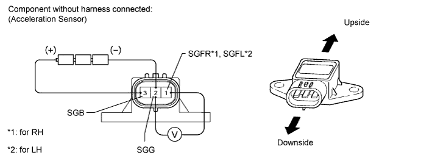

FRONT ACCELERATION SENSOR > INSPECTION |
| 1. INSPECT ACCELERATION SENSOR |

Connect 3 dry batteries of 1.5 V in series.
Connect the positive (+) end of the battery to terminal 3 (SGB) of the acceleration sensor and the negative (-) end of the battery to terminal 2 (SGG). Then measure the voltage between terminal 1 (SGFR*1, SGFL*2) and terminal 2 (SGG).
Measure the voltage according to the value(s) in the table below.
| Tester Connection | Condition | Specified Condition |
| 1 (SGFR) - 2 (SGG) | Sensor is stationary | Approx. 2.0 to 2.5 V |
| Sensor is tilted | Change between approx. 0.9 to 2.3 V |
| Tester Connection | Condition | Specified Condition |
| 1 (SGFL) - 2 (SGG) | Sensor is stationary | Approx. 2.0 to 2.5 V |
| Sensor is tilted | Change between approx. 0.9 to 2.3 V |